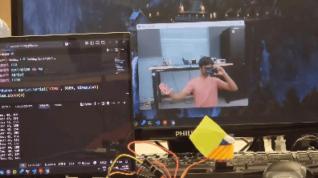

Robotic Palm Tracker

Overview
I designed a 2-axis palm tracking robot that uses computer vision to track the motion of a palm and mirrors it using servo motors on a 3D printed mount.
The robot consisted of two separate programs:
- A Python script running on a laptop which used OpenCV and MediaPipe to identify a palm, generate coordinates to track it in real-time, and send data to an Arduino.
- An Arduino sketch written in C++ to read data from the laptop and control 2 servo motors to mirror movements of the palm in the x and y-axis.
The first version of the computer vision program ran on a Raspberry Pi, but I later switched to a laptop due to camera driver issues. This is something I would like to revisit in the future, since the Pi is portable and could be used as the brains of a robot utilizing this palm tracker.
Additionally, to improve the smoothness of the tracking motion, I initially tried swapping the servos with stepper motors. This was unsuccessful, so I implemented a software fix by adding a low-pass filter in the Arduino’s C++ code to prevent sudden large movements.
Future Improvements
I am planning to improve the functionality of this robot by:
- Running the computer vision program on a Rasperry Pi with a PiCam, so that the PiCam can move around and track indefinitely.
- Adding an omnidirectional microphone array so that the robot can respond to voices and turn to find a person when a wake word is spoken.